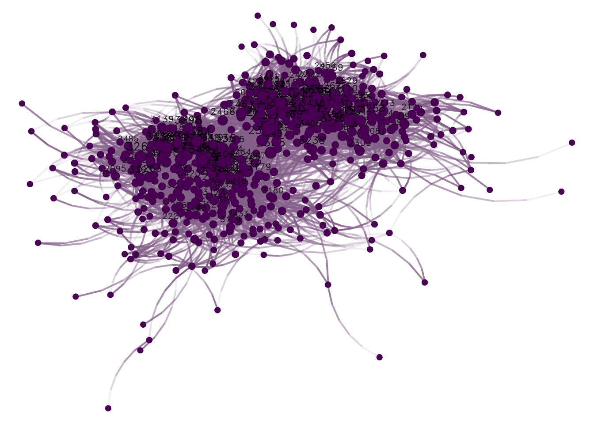
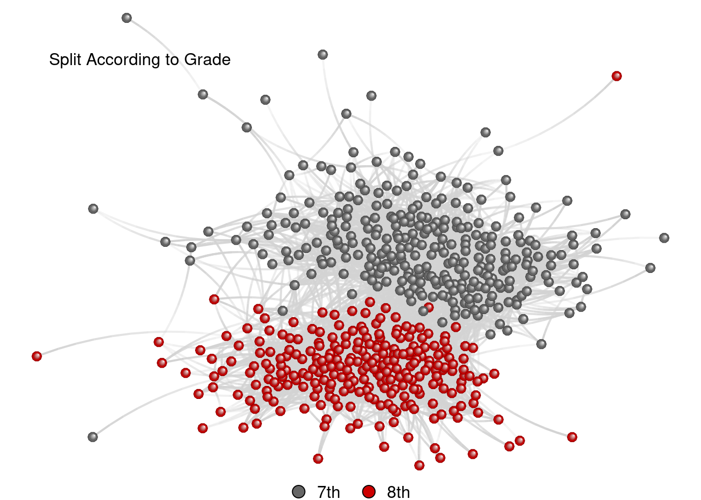
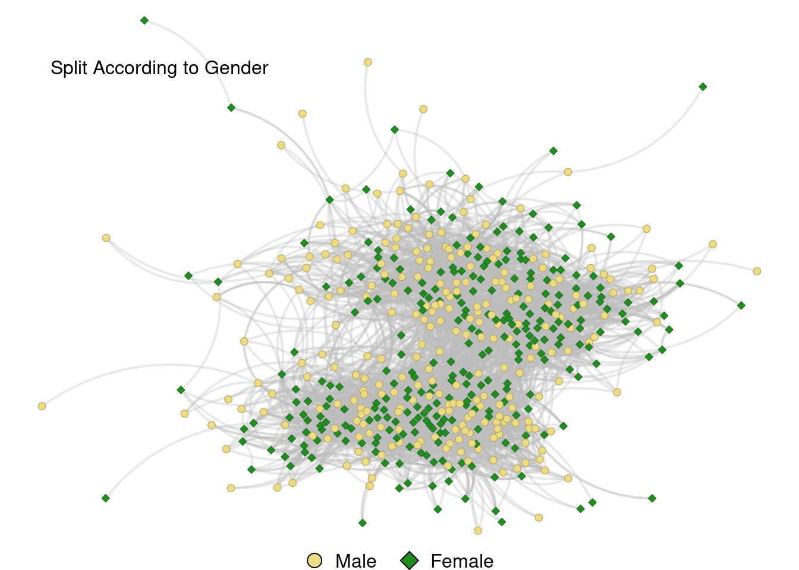
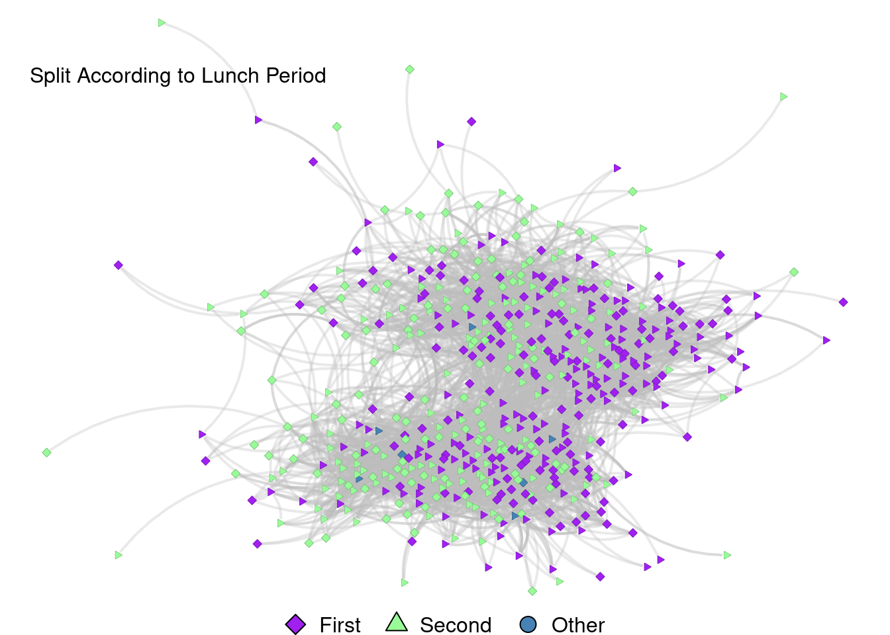

# attaching packages ####
library(igraph)
library(netplot)
library(data.table)Middle School Students
This webpage will explore the dataset exploring connections in 7th and 8th grade students at a middle school. The data was taken from “Estimates of Social Contact in a Middle School Based on Self-Report and Wireless Sensor Data”. This is the “Example 1” on the poster.
Introduction || Cleaning Data || Explore Data
These are the packages that were used for this analysis:
First, let’s clean it all up, getting rid of the “isolates” (those who only are connected to one person). Here is the script for cleaning that data:
# loading and cleaning data ####
students <- fread("./misc/data-raw/pone.0153690.s001.csv")
interactions <- fread("./misc/data-raw/pone.0153690.s003.csv")
students <- students[!is.na(id)]
students <- students[gender %in% c("0", "1")]
interactions <- interactions[!is.na(id) & !is.na(contactId)]
## Which connections are not OK?
ids <- sort(unique(students$id))
## Alright, this narrowed our data from 10781 to 5150
interactions <- interactions[(id %in% ids) & (contactId %in% ids)]
## Creating weights matrix
net <- graph_from_data_frame(
d = interactions[, .(id, contactId)],
directed = FALSE, vertices = as.data.frame(students)
)
## Getting only connected individuals
net_with_no_isolates <- induced_subgraph(net, which(degree(net) > 0))
## Plot with no isolates
nplot(
net_with_no_isolates
) 
Awesome. Now that things are cleaned up a bit, let’s see what separate sections we are dealing with!
# let's see what it looks like ####
print(net_with_no_isolates)IGRAPH 495fbea UN-- 541 5136 --
+ attr: name (v/c), grade (v/n), gender (v/n), unique (v/n), lunch
| (v/n), initialsNum (v/n)
+ edges from 495fbea (vertex names):
[1] 2004--3127 2004--2620 2004--2141 2004--2362 2004--2362 2004--2294
[7] 2004--2274 2004--2402 2004--2402 2004--2402 2004--2603 2004--2603
[13] 2004--2603 2004--2603 2004--2603 2004--2603 2004--2603 2004--2603
[19] 2004--2603 2004--2028 2004--2028 2004--2028 2004--2308 2004--3025
[25] 2006--2028 2006--2028 2006--2028 2006--3158 2006--3381 2006--2495
[31] 2006--2495 2006--2494 2006--2356 2006--2356 2006--2408 2009--2346
[37] 2009--3018 2009--2265 2009--2395 2009--2395 2009--3134 2009--3427
+ ... omitted several edgesHere we go! Other than the new unique aspects, we have grade, gender, and lunch period that we can explore.
Load in “color_nodes.R” function
## load in 'color_nodes' function ####
source(file = "./misc/color_nodes_function.R")Split According to Grade
## adjust 'grade' to factor
V(net_with_no_isolates)$grade <- as.factor(V(net_with_no_isolates)$grade)
# plotting connections among grades ####
set.seed(77)
a_colors <- color_nodes(net_with_no_isolates,"grade", c("gray40","red3"))
attr(a_colors, "map") 7 8
"#666666" "#CD0000" grades <- nplot(
net_with_no_isolates,
vertex.color = color_nodes(net_with_no_isolates, "grade", c("gray40","red3")),
vertex.nsides = ifelse(V(net_with_no_isolates)$grade == 7, 10, 10),
vertex.size.range = c(0.015, 0.015),
edge.color = ~ego(alpha = 1, col = "lightgray") + alter(alpha = 0.25, col = "lightgray"),
vertex.label = NULL,
edge.curvature = pi/6,
edge.line.breaks = 10
)
# add radial gradient fill
grades <- set_vertex_gpar(grades,
element = "core",
fill = lapply(get_vertex_gpar(grades, "frame", "col")$col, \(i) {
radialGradient(c("white", i), cx1=.8, cy1=.8, r1=0)
}))
# add legend to graph
grades_general <- nplot_legend(
grades,
labels = c("7th", "8th"),
pch = c(21,21),
gp = gpar(
fill = c("gray40","red3")),
packgrob.args = list(side = "bottom"),
ncol = 2
)
grades_general
grid.text("Split According to Grade", x = .2, y = .87, just = "bottom") 
Split According to Gender
# let's get a graph for the gender data
V(net_with_no_isolates)$gender <- as.factor(V(net_with_no_isolates)$gender)
a_colors <- color_nodes(net_with_no_isolates,"gender", c("lightgoldenrod2","forestgreen"))
attr(a_colors, "map") 0 1
"#EEDC82" "#228B22" ## plot
set.seed(77)
gender <- nplot(
net_with_no_isolates,
vertex.color = color_nodes(net_with_no_isolates, "gender",c("lightgoldenrod2","forestgreen")),
vertex.nsides = ifelse(V(net_with_no_isolates)$gender == 0, 10, 4),
vertex.size.range = c(0.01, 0.01),
edge.color = ~ego(alpha = 0.33, col = "gray") + alter(alpha = 0.33, col = "gray"),
vertex.label = NULL,
edge.line.breaks = 10
)
# add legend to graph
nplot_legend(
gender,
labels = c("Male", "Female"),
pch = c(21,23),
gp = gpar(
fill = c("lightgoldenrod2","forestgreen")),
packgrob.args = list(side = "bottom"),
ncol = 2
)
grid.text("Split According to Gender", x = .2, y = .87, just = "bottom") 
Split According to Lunch Period
# now let's do the same with lunch period
V(net_with_no_isolates)$lunch <- as.factor(V(net_with_no_isolates)$lunch)
a_colors <- color_nodes(net_with_no_isolates,"lunch", c("purple","palegreen","steelblue"))
attr(a_colors, "map") 1 2 99
"#A020F0" "#98FB98" "#4682B4" ## plot
set.seed(77)
lunch <- nplot(
net_with_no_isolates,
vertex.color = color_nodes(net_with_no_isolates, "lunch",c("purple","palegreen","steelblue")),
vertex.nsides =
ifelse(V(net_with_no_isolates)$gender == 0, 4, # First Lunch
ifelse(V(net_with_no_isolates)$gender == 1, 3, # Second Lunch
10)), # Other
vertex.size.range = c(0.01, 0.01),
edge.color = ~ego(alpha = 0.33, col = "gray") + alter(alpha = 0.33, col = "gray"),
vertex.label = NULL,
edge.line.breaks = 10
)
# add legend to graph
nplot_legend(
lunch,
labels = c("First", "Second", "Other"),
pch = c(23,24,21),
gp = gpar(
fill = c("purple","palegreen","steelblue")),
packgrob.args = list(side = "bottom"),
ncol = 3
)
grid.text("Split According to Lunch Period", x = .2, y = .87, just = "bottom") 